9 ✅ Camadas
9.1 Introdução
No Capítulo 1, você aprendeu muito mais do que apenas criar gráficos de dispersão, gráficos de barras e boxplots. Você aprendeu uma base que você pode usar para criar qualquer tipo de gráfico com o ggplot2.
Nesse capítulo, você irá expandir essa base conforme for aprendendo sobre a gramática dos gráficos baseada em camadas. Vamos começar explorando mais profundamente o mapeamento estético, as geometrias e as facetas. Em seguida, você aprenderá sobre as transformações estatísticas que acontecem nos bastidores quando o ggplot2 cria um gráfico. Essas transformações são usadas para calcular novos valores a serem plotados, como as alturas das barras em um gráfico de barras, ou as medianas em um boxplot. Você também irá aprender sobre ajustes de posição, os quais modificam como as geometrias são exibidas nos seus gráficos. Por fim, introduziremos brevemente o sistema de coordenadas.
Não iremos abordar todas as funções e opções para cada uma dessas camadas, mas guiaremos você pelas funcionalidades mais importantes e comumente utilizadas que são fornecidas pelo ggplot2. Além disso, apresentaremos a você pacotes que estendem as funcionalidades do ggplot2.
9.1.1 Pré-requisitos
Esse capítulo foca no ggplot2. Para acessar as páginas de ajuda e as funções utilizadas nesse capítulo, carregue o pacote tidyverse. Para acessar as bases de dados, carregaremos também o pacote dados. Ao rodar o código abaixo, esses dois pacotes serão carregados:
9.2 Mapeamento estético
“O maior valor de uma imagem está em quando ela nos força a perceber o que não esperávamos ver.” — John Tukey
Lembre-se de que a base de dados milhas incluída no pacote dados contém 234 observações de 38 modelos de carros.
milhas
#> # A tibble: 234 × 11
#> fabricante modelo cilindrada ano cilindros transmissao tracao cidade
#> <chr> <chr> <dbl> <int> <int> <chr> <chr> <int>
#> 1 audi a4 1.8 1999 4 auto(l5) d 18
#> 2 audi a4 1.8 1999 4 manual(m5) d 21
#> 3 audi a4 2 2008 4 manual(m6) d 20
#> 4 audi a4 2 2008 4 auto(av) d 21
#> 5 audi a4 2.8 1999 6 auto(l5) d 16
#> 6 audi a4 2.8 1999 6 manual(m5) d 18
#> # ℹ 228 more rows
#> # ℹ 3 more variables: rodovia <int>, combustivel <chr>, classe <chr>Entre as variáveis da base milhas estão:
cilindrada: O tamanho do motor de um carro, em litros. Uma variável numérica.rodovia: A eficiência de combustível do carro na rodovia, em milhas por galão (milhas). Um carro com baixa eficiência de combustível consome mais combustível do que um carro com alta eficiência, ao percorrerem a mesma distância. Uma variável numérica.classe: Tipo do carro. Uma variável categórica.
Vamos começar visualizando a relação entre cilindrada e rodovia para várias classes de carros. Podemos fazer isso com um gráfico de dispersão no qual as variáveis numéricas são mapeadas nos atributos estéticos x e y e a variável categórica é mapeada em um atributo estético como color (cor) ou shape (forma).
# Esquerda
ggplot(milhas, aes(x = cilindrada, y = rodovia, color = classe)) +
geom_point()
# Direita
ggplot(milhas, aes(x = cilindrada, y = rodovia, shape = classe)) +
geom_point()
#> Warning: The shape palette can deal with a maximum of 6 discrete values because more
#> than 6 becomes difficult to discriminate
#> ℹ you have requested 7 values. Consider specifying shapes manually if you
#> need that many have them.
#> Warning: Removed 62 rows containing missing values or values outside the scale range
#> (`geom_point()`).![Dois gráficos de dispersão, lado a lado, ambos mostram a eficiência de combustível na rodovia versus o tamanho do motor dos carros e mostram uma associação negativa. No gráfico à esquerda, a classe é mapeada na estética de cor (color), resultando em cores diferentes para cada classe. No gráfico à direita, a classe é mapeada na estética de forma, resultando em diferentes formas de caracteres para cada classe, exceto para SUV. Cada gráfico vem com uma legenda que mostra a relação entre a cor ou a forma e as categorias da variável de classe.](layers_files/figure-html/unnamed-chunk-4-1.png)
![Dois gráficos de dispersão, lado a lado, ambos mostram a eficiência de combustível na rodovia versus o tamanho do motor dos carros e mostram uma associação negativa. No gráfico à esquerda, a classe é mapeada na estética de cor (color), resultando em cores diferentes para cada classe. No gráfico à direita, a classe é mapeada na estética de forma, resultando em diferentes formas de caracteres para cada classe, exceto para SUV. Cada gráfico vem com uma legenda que mostra a relação entre a cor ou a forma e as categorias da variável de classe.](layers_files/figure-html/unnamed-chunk-4-2.png)
Quando classe é mapeada no atributo estético shape (forma), recebemos dois avisos:
1: The shape palette can deal with a maximum of 6 discrete values because more than 6 becomes difficult to discriminate; you have 7. Consider specifying shapes manually if you must have them.
2: Removed 62 rows containing missing values (
geom_point()).
Ou seja:
1: A paleta de formas pode lidar com no máximo 6 valores discretos, porque acima de 6 torna-se difícil discriminá-los; você tem 7. Considere especificar as formas manualmente caso elas sejam de fato necessárias.
2: 62 linhas contendo valores ausentes foram removidas (
geom_point()).
Uma vez que o ggplot2, por padrão, usa apenas seis formas por vez, grupos que ultrapassem essa quantidade não serão plotados quando você usar o atributo estético shape (forma). O segundo aviso está relacionado a esse primeiro: há 62 SUVs na base de dados e elas não foram plotadas.
De forma semelhante, podemos também mapear a variável classe nos atributos estéticos size (tamanho) ou alpha (transparência), as quais controlarão o tamanho e a transparência dos pontos, respectivamente.
# Esquerda
ggplot(milhas, aes(x = cilindrada, y = rodovia, size = classe)) +
geom_point()
#> Warning: Using size for a discrete variable is not advised.
# Direita
ggplot(milhas, aes(x = cilindrada, y = rodovia, alpha = classe)) +
geom_point()
#> Warning: Using alpha for a discrete variable is not advised.![Dois gráficos de dispersão, lado a lado, ambos mostram a eficiência de combustível na rodovia versus o tamanho do motor dos carros e mostram uma associação negativa. No gráfico à esquerda, a classe é mapeada na estética de tamanho (size), resultando em tamanhos diferentes para cada classe. No gráfico à direita, a classe é mapeada na estética alpha, resultando em diferentes transparências para cada classe. Cada gráfico vem com uma legenda que mostra a relação entre o tamanho ou a transparência e as categorias da variável de classe.](layers_files/figure-html/unnamed-chunk-5-1.png)
![Dois gráficos de dispersão, lado a lado, ambos mostram a eficiência de combustível na rodovia versus o tamanho do motor dos carros e mostram uma associação negativa. No gráfico à esquerda, a classe é mapeada na estética de tamanho (size), resultando em tamanhos diferentes para cada classe. No gráfico à direita, a classe é mapeada na estética alpha, resultando em diferentes transparências para cada classe. Cada gráfico vem com uma legenda que mostra a relação entre o tamanho ou a transparência e as categorias da variável de classe.](layers_files/figure-html/unnamed-chunk-5-2.png)
Esses dois gráficos também produzem um aviso:
Using alpha for a discrete variable is not advised.
Ou seja:
Não é recomendado usar o atributo estético
alpha(transparência) para uma variável discreta.
Mapear uma variável discreta não ordenada (categórica), classe, em um atributo estético ordenado (size ou alpha) em geral não é uma boa ideia, porque implica em uma ordenação que não existe de fato.
Uma vez que você seleciona o atributo estético do mapeamento, o ggplot2 cuida do resto. Ele seleciona uma escala adequada para ser utilizada com esse atributo e constrói uma legenda que explica a relação entre as categorias e os valores. Para os atributos estéticos x e y, o ggplot2 não cria uma legenda, mas cria uma linha de eixo com marcas de escala e rótulos. Essa linha de eixo fornece a mesma informação que uma legenda: explica a correspondência entre as posições e os valores.
Você também pode definir manualmente as propriedades visuais da sua geometria ao incluí-las como um argumento da função geom (fora do aes()), ao invés de depender do mapeamento de uma variável para definir essa aparência. Por exemplo, podemos tornar todos os pontos do nosso gráfico azuis:
ggplot(milhas, aes(x = cilindrada, y = rodovia)) +
geom_point(color = "blue")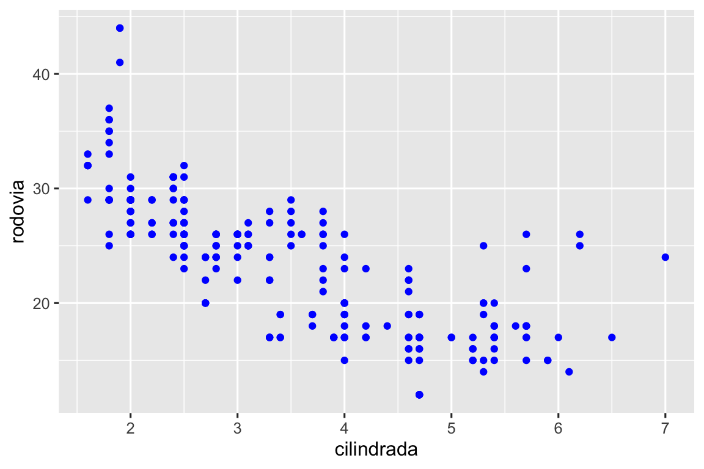
Aqui, a cor não traz informações sobre uma variável, apenas modifica a aparência do gráfico. Você vai precisar selecionar um valor que faça sentido para aquele atributo estético:
- O nome de uma cor como uma sequência de caracteres (texto) em inglês, por exemplo,
color = "blue" - O tamanho de um ponto em mm, por exemplo,
size = 1 - O formato de um ponto como um número, por exemplo,
shape = 1, como mostrado na Figura 9.1.
![Relação das formas e dos números que as representam: 0 - quadrado, 1 - círculo, 2 - triângulo com ponta para cima, 3 - sinal de mais, 4 - sinal cruzado, 5 - diamante, 6 - triângulo com ponta para baixo, 7 - sinal cruzado no interior de um quadrado, 8 - estrela, 9 - sinal de mais no interior de um diamante, 10 - sinal de mais no interior de um círculo, 11 - triângulos com ponta para cima e para baixo, 12 - sinal de mais no interior de um quadrado, 13 - sinal cruzado no interior de um círculo, 14 - triângulo com ponta para cima e quadrado, 15 - quadrado sólido, 16 - círculo sólido, 17 - triângulo com ponta para cima sólido, 18 - diamante sólido, 19 - círculo sólido, 20 - ponto (círculo menor), 21 - círculo preenchido em vermelho, 22 - quadrado preenchido em vermelho, 23 - diamante preenchido em vermelho, 24 - triângulo com ponta para cima preenchido em vermelho, 25 - triângulo com ponta para baixo preenchido em vermelho.](layers_files/figure-html/fig-shapes-1.png)
color (cor) e fill (preenchimento). As formas vazadas (0–14) têm uma borda cuja cor é determinada pelo argumento color; as formas sólidas (15–20) são preenchidas com a cor definida em color; as formas preenchidas (21–24) têm a cor da sua borda definida por color e o seu preenchimento definido por fill. As figuras foram alinhadas de forma a manter formas semelhantes próximas umas das outras.
Até o momento, nós discutimos os atributos estéticos que podem ser mapeados em um gráfico de dispersão ao usarmos uma geometria de ponto (geom_point). Você pode aprender mais sobre todas as possibilidades de mapeamentos estéticos na vinheta de especificações estéticas (em inglês): https://ggplot2.tidyverse.org/articles/ggplot2-specs.html.
Os atributos estéticos específicos que você pode usar em um gráfico dependem da geometria que você está utilizando para representar os dados. Na próxima seção, exploraremos mais a fundo as geometrias.
9.2.1 Exercícios
Crie um gráfico de dispersão de
rodoviavs.cilindradano qual os pontos sejam triângulos preenchidos em cor-de-rosa (pink).-
Por que o código abaixo não resultou em um gráfico com pontos em azul?
ggplot(milhas) + geom_point(aes(x = cilindrada, y = rodovia, color = "blue")) O que o atributo estético
strokefaz? Com quais formas esse atributo estético funciona? (Dica: use?geom_point)O que acontece se você mapear um atributo estético para algo que não seja o nome de uma variável, como
aes(color = cilindrada < 5)? Observe que você também precisará definir os atributos estéticos x e y.
9.3 Geometrias
Qual a semelhança entre esses dois gráficos?
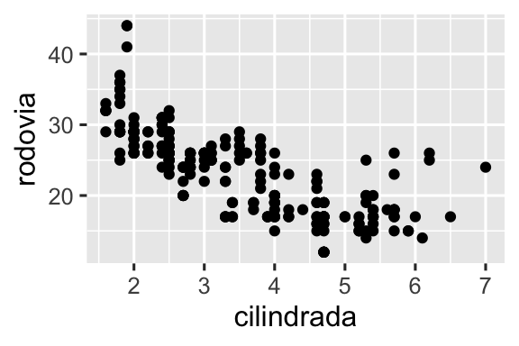
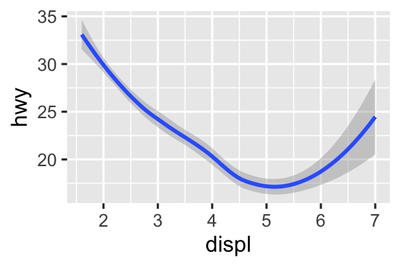
Os dois gráficos contém a mesma variável x, a mesma variável y e descrevem os mesmos dados. Mas os gráficos não são idênticos. Cada um desses gráficos usa uma geom diferente para representar esses dados. O gráfico à esquerda usa a geometria de ponto (point), enquanto o gráfico à direita usa a geometria de suavização (smooth) e inclui uma linha suavizada ajustada aos dados.
Para alterar a geometria do seu gráfico, basta mudar a função geom adicionada ao ggplot(). Por exemplo, para criar os gráficos acima você pode usar o seguinte código:
# Esquerda
ggplot(milhas, aes(x = cilindrada, y = rodovia)) +
geom_point()
# Direita
ggplot(milhas, aes(x = cilindrada, y = rodovia)) +
geom_smooth()
#> `geom_smooth()` using method = 'loess' and formula = 'y ~ x'Cada função geom no ggplot2 recebe um argumento mapping, que pode ser definido tanto localmente, na camada geom, quanto globalmente, na camada ggplot(). No entanto, nem todos os atributos estéticos irão funcionar com todas as geometrias. Você pode definir o formato (shape) de um ponto, mas não pode definir o “formato” de uma linha. Se você tentar fazer isso, o ggplot2 ignorará silenciosamente esse mapeamento estético. Por outro lado, você pode definir o tipo de linha (linetype) de uma linha. A função geom_smooth() irá desenhar uma linha diferente, com um tipo diferente de linha, para cada valor da variável que for mapeada em linetype.
# Esquerda
ggplot(milhas, aes(x = cilindrada, y = rodovia, shape = tracao)) +
geom_smooth()
# Direita
ggplot(milhas, aes(x = cilindrada, y = rodovia, linetype = tracao)) +
geom_smooth()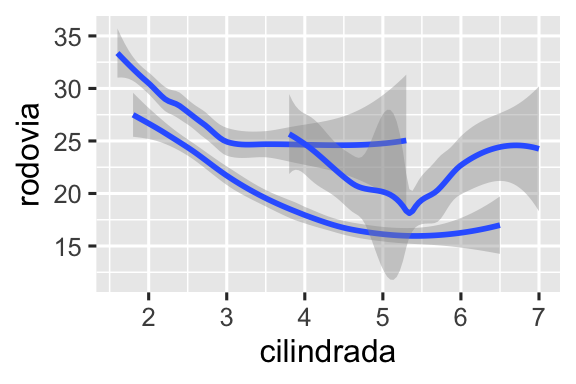
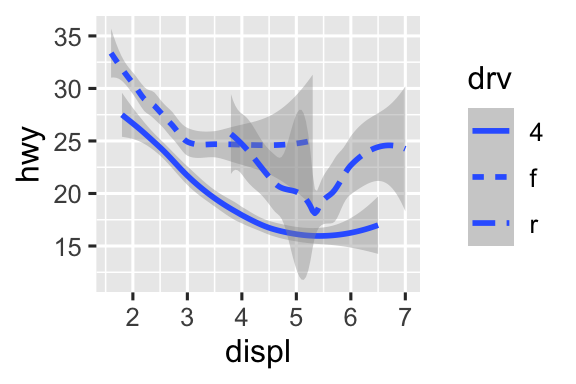
Aqui, o geom_smooth() separa os carros em três linhas com base na categoria de tracao à qual pertencem. Uma linha descreve todos os pontos pertencentes à categoria 4, outra linha descreve os pontos pertencentes à categoria d, e uma terceira linha descreve todos os pontos pertencentes à categoria t. Aqui, 4 corresponde a tração nas quatro rodas, d corresponde a tração nas rodas dianteiras e t corresponde a tração nas rodas traseiras.
Se isso não fez muito sentido, podemos tornar essa relação mais óbvia ao sobrepor as linhas aos dados brutos e então colorir tudo de acordo com a tracao.
ggplot(milhas, aes(x = cilindrada, y = rodovia, color = tracao)) +
geom_point() +
geom_smooth(aes(linetype = tracao))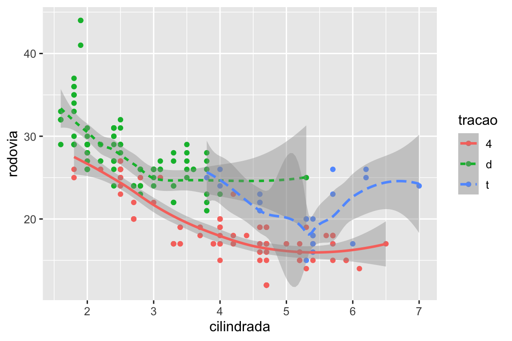
Observe que esse gráfico contém duas geometrias no mesmo gráfico.
Muitas geometrias, como o geom_smooth(), usam uma única geometria para representar várias linhas de dados. Para essas geometrias, você pode mapear o atributo estético group (grupo) a uma variável categórica para desenhar várias geometrias. O ggplot2 irá desenhar uma geometria separada para cada valor único da variável de agrupamento. Na prática, o ggplot2 agrupará automaticamente os dados para essas geometrias sempre que você mapear um atributo estético a uma variável discreta (como no exemplo com linetype). É conveniente contar com esse recurso porque o atributo estético group, por si só, não adiciona às geoms uma legenda ou características que permitam distinguir os grupos.
# Esquerda
ggplot(milhas, aes(x = cilindrada, y = rodovia)) +
geom_smooth()
# Middle
ggplot(milhas, aes(x = cilindrada, y = rodovia)) +
geom_smooth(aes(group = tracao))
# Direita
ggplot(milhas, aes(x = cilindrada, y = rodovia)) +
geom_smooth(aes(color = tracao), show.legend = FALSE)![Três gráficos, todos mostrando a eficiência de combustível na rodovia no eixo y e o tamanho do motor dos carros no eixo x, com os dados sendo representados por uma curva suavizada. O primeiro gráfico inclui apenas essas duas variáveis, o gráfico ao centro apresenta três curvas suavizadas separadas para cada categoria de tração, e o gráfico à direita não apenas mostra as mesmas três curvas separadas para cada tipo de tração, como mostra cada curva em uma cor diferente, com uma legenda relacionando a cor à categoria de tração. Todos os gráficos exibem também intervalos de confiança ao redor das curvas.](layers_files/figure-html/unnamed-chunk-13-1.png)
![Três gráficos, todos mostrando a eficiência de combustível na rodovia no eixo y e o tamanho do motor dos carros no eixo x, com os dados sendo representados por uma curva suavizada. O primeiro gráfico inclui apenas essas duas variáveis, o gráfico ao centro apresenta três curvas suavizadas separadas para cada categoria de tração, e o gráfico à direita não apenas mostra as mesmas três curvas separadas para cada tipo de tração, como mostra cada curva em uma cor diferente, com uma legenda relacionando a cor à categoria de tração. Todos os gráficos exibem também intervalos de confiança ao redor das curvas.](layers_files/figure-html/unnamed-chunk-13-2.png)
![Três gráficos, todos mostrando a eficiência de combustível na rodovia no eixo y e o tamanho do motor dos carros no eixo x, com os dados sendo representados por uma curva suavizada. O primeiro gráfico inclui apenas essas duas variáveis, o gráfico ao centro apresenta três curvas suavizadas separadas para cada categoria de tração, e o gráfico à direita não apenas mostra as mesmas três curvas separadas para cada tipo de tração, como mostra cada curva em uma cor diferente, com uma legenda relacionando a cor à categoria de tração. Todos os gráficos exibem também intervalos de confiança ao redor das curvas.](layers_files/figure-html/unnamed-chunk-13-3.png)
Se você incluir mapeamentos em uma função geom, o ggplot2 irá tratá-los como mapeamentos locais para aquela camada. Ele usará esses mapeamentos para estender ou substituir mapeamentos globais apenas para aquela camada. Isso torna possível representar atributos estéticos diferentes em diferentes camadas.
ggplot(milhas, aes(x = cilindrada, y = rodovia)) +
geom_point(aes(color = classe)) +
geom_smooth()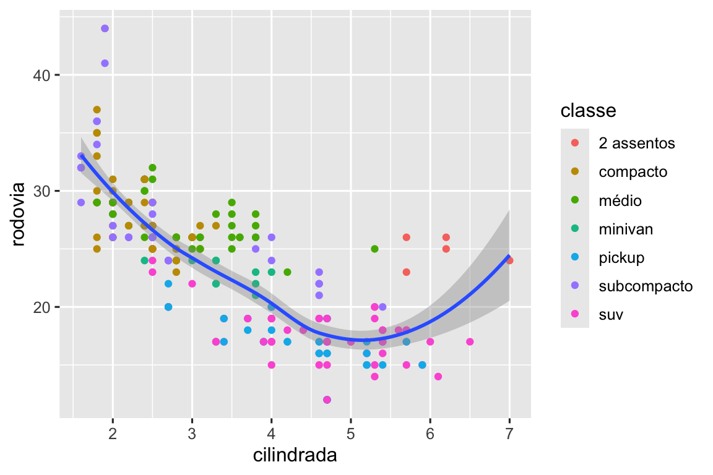
Você pode usar essa mesma ideia para especificar dados (data) diferentes para cada camada. Aqui, nós utilizamos pontos vermelhos e círculos vazados para destacar carros com dois assentos. O argumento data, definido localmente na camada geom_point(), substitui - apenas para essa camada - o argumento data definido globalmente na camada ggplot().
ggplot(milhas, aes(x = cilindrada, y = rodovia)) +
geom_point() +
geom_point(
data = milhas |> filter(classe == "2 assentos"),
color = "red"
) +
geom_point(
data = milhas |> filter(classe == "2 assentos"),
shape = "circle open", size = 3, color = "red"
)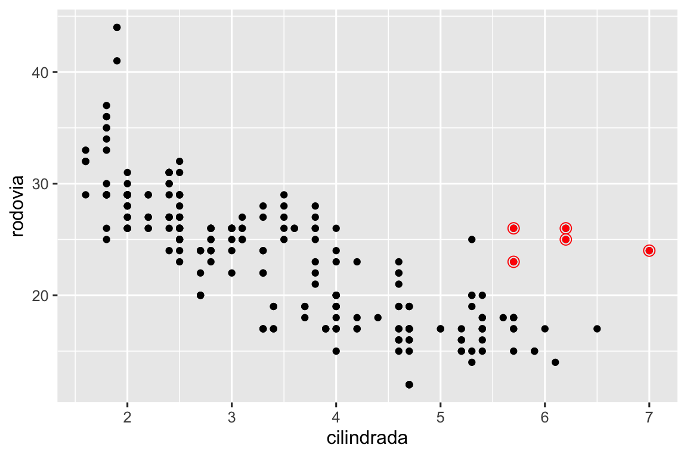
As geometrias são os blocos de construção base do ggplot2. Você pode transformar completamente a aparência do seu gráfico ao alterar as geometrias que o compõem, e geoms diferentes podem mostrar diferentes características dos seus dados. Por exemplo, o histograma e o gráfico de densidade abaixo mostram que a distribuição de eficiência de combustível na rodovia é bimodal e assimétrica à direita, enquanto o boxplot mostra que há dois possíveis outliers (valores atípicos).
# Esquerda
ggplot(milhas, aes(x = rodovia)) +
geom_histogram(binwidth = 2)
# Middle
ggplot(milhas, aes(x = rodovia)) +
geom_density()
# Direita
ggplot(milhas, aes(x = rodovia)) +
geom_boxplot()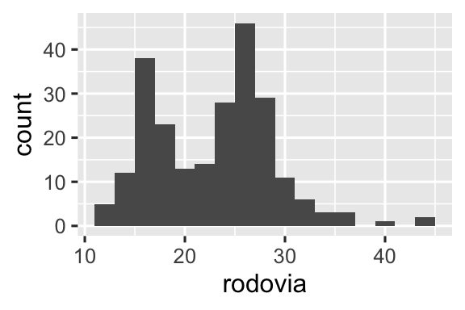
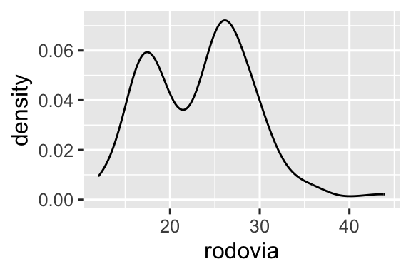
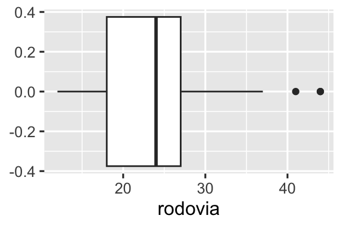
O ggplot2 oferece mais de 40 geoms, mas essas não cobrem todas as possibilidades de criação de gráficos. Se você precisar de uma geometria diferente, recomendamos procurá-la em pacotes de extensão, para ver se outra pessoa já a implementou (veja uma amostra em https://exts.ggplot2.tidyverse.org/gallery/). Por exemplo, o pacote ggridges (https://wilkelab.org/ggridges) é útil para construir ridgeline plots (gráficos de densidade sobrepostos), os quais podem ser úteis para visualizar as curvas de densidade de uma variável numérica para diferentes categorias de uma variável categórica. No gráfico a seguir, nós não apenas utilizamos uma nova geometria (geom_density_ridges()), mas também mapeamos a mesma variável a múltiplos atributos estéticos (tracao foi mapeada em y, fill e color), além de definirmos um atributo estético (alpha = 0.5) para tornar as curvas de densidade transparentes.
library(ggridges)
ggplot(milhas, aes(x = rodovia, y = tracao, fill = tracao, color = tracao)) +
geom_density_ridges(alpha = 0.5, show.legend = FALSE)
#> Picking joint bandwidth of 1.28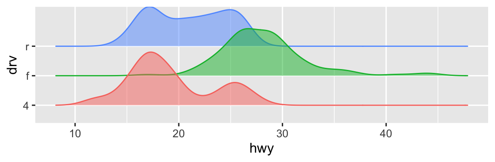
O melhor lugar para obter uma visão abrangente de todas as geometrias oferecidas pelo ggplot2, assim como de todas as funções do pacote, é a página de referência: https://ggplot2.tidyverse.org/reference. Para aprender mais sobre uma geometria específica, use a ajuda (por exemplo, ?geom_smooth).
9.3.1 Exercícios
Qual geom você usaria para construir um gráfico de linha? E um boxplot? E um histograma? E um gráfico de área?
-
Anteriormente nesse capítulo nós utilizamos o argumento
show.legendsem explicá-lo:ggplot(milhas, aes(x = cilindrada, y = rodovia)) + geom_smooth(aes(color = tracao), show.legend = FALSE)
O que o argumento `show.legend = FALSE` faz nesse gráfico?
O que acontece se você o remove?
Por que você acha que o utilizamos anteriomente?O que o argumento
seda geometriageom_smooth()faz?-
Recrie o código em R necessário para gerar os gráficos abaixo. Observe que sempre que uma variável categórica é utilizada no gráfico, trata-se da variável
tracao.![Há seis gráficos de dispersão nessa figura, dispostos em uma grade 3x2. Em todos os gráficos, a eficiência de combustível na rodovia está no eixo y e o tamanho do motor dos carros está no eixo x. O primeiro gráfico mostra todos os pontos em preto, com uma curva suavizada sobreposta a deles. No segundo gráfico, os pontos também estão todos em preto, com curvas suavizadas separadas para cada tipo de tração sobrepostas. No terceiro gráfico, os pontos e as curvas suavizadas estão representadas em cores diferentes para cada tipo de tração. No quarto gráfico, os pontos estão representados em cores diferentes para cada tipo de tração, mas há uma única curva suavizada sobreposta ajustada a todos os dados. No quinto gráfico, os pontos estão representados em cores diferentes para cada tipo de tração, e curvas suavizadas separadas, com diferentes tipos de linhas, foram ajustadas a cada tipo de tração. E, finalmente, no sexto gráfico os pontos estão representados em cores diferentes para cada tipo de tração e eles apresentam uma borda branca espessa.](layers_files/figure-html/unnamed-chunk-19-1.png)
![Há seis gráficos de dispersão nessa figura, dispostos em uma grade 3x2. Em todos os gráficos, a eficiência de combustível na rodovia está no eixo y e o tamanho do motor dos carros está no eixo x. O primeiro gráfico mostra todos os pontos em preto, com uma curva suavizada sobreposta a deles. No segundo gráfico, os pontos também estão todos em preto, com curvas suavizadas separadas para cada tipo de tração sobrepostas. No terceiro gráfico, os pontos e as curvas suavizadas estão representadas em cores diferentes para cada tipo de tração. No quarto gráfico, os pontos estão representados em cores diferentes para cada tipo de tração, mas há uma única curva suavizada sobreposta ajustada a todos os dados. No quinto gráfico, os pontos estão representados em cores diferentes para cada tipo de tração, e curvas suavizadas separadas, com diferentes tipos de linhas, foram ajustadas a cada tipo de tração. E, finalmente, no sexto gráfico os pontos estão representados em cores diferentes para cada tipo de tração e eles apresentam uma borda branca espessa.](layers_files/figure-html/unnamed-chunk-19-2.png)
![Há seis gráficos de dispersão nessa figura, dispostos em uma grade 3x2. Em todos os gráficos, a eficiência de combustível na rodovia está no eixo y e o tamanho do motor dos carros está no eixo x. O primeiro gráfico mostra todos os pontos em preto, com uma curva suavizada sobreposta a deles. No segundo gráfico, os pontos também estão todos em preto, com curvas suavizadas separadas para cada tipo de tração sobrepostas. No terceiro gráfico, os pontos e as curvas suavizadas estão representadas em cores diferentes para cada tipo de tração. No quarto gráfico, os pontos estão representados em cores diferentes para cada tipo de tração, mas há uma única curva suavizada sobreposta ajustada a todos os dados. No quinto gráfico, os pontos estão representados em cores diferentes para cada tipo de tração, e curvas suavizadas separadas, com diferentes tipos de linhas, foram ajustadas a cada tipo de tração. E, finalmente, no sexto gráfico os pontos estão representados em cores diferentes para cada tipo de tração e eles apresentam uma borda branca espessa.](layers_files/figure-html/unnamed-chunk-19-3.png)
![Há seis gráficos de dispersão nessa figura, dispostos em uma grade 3x2. Em todos os gráficos, a eficiência de combustível na rodovia está no eixo y e o tamanho do motor dos carros está no eixo x. O primeiro gráfico mostra todos os pontos em preto, com uma curva suavizada sobreposta a deles. No segundo gráfico, os pontos também estão todos em preto, com curvas suavizadas separadas para cada tipo de tração sobrepostas. No terceiro gráfico, os pontos e as curvas suavizadas estão representadas em cores diferentes para cada tipo de tração. No quarto gráfico, os pontos estão representados em cores diferentes para cada tipo de tração, mas há uma única curva suavizada sobreposta ajustada a todos os dados. No quinto gráfico, os pontos estão representados em cores diferentes para cada tipo de tração, e curvas suavizadas separadas, com diferentes tipos de linhas, foram ajustadas a cada tipo de tração. E, finalmente, no sexto gráfico os pontos estão representados em cores diferentes para cada tipo de tração e eles apresentam uma borda branca espessa.](layers_files/figure-html/unnamed-chunk-19-4.png)
![Há seis gráficos de dispersão nessa figura, dispostos em uma grade 3x2. Em todos os gráficos, a eficiência de combustível na rodovia está no eixo y e o tamanho do motor dos carros está no eixo x. O primeiro gráfico mostra todos os pontos em preto, com uma curva suavizada sobreposta a deles. No segundo gráfico, os pontos também estão todos em preto, com curvas suavizadas separadas para cada tipo de tração sobrepostas. No terceiro gráfico, os pontos e as curvas suavizadas estão representadas em cores diferentes para cada tipo de tração. No quarto gráfico, os pontos estão representados em cores diferentes para cada tipo de tração, mas há uma única curva suavizada sobreposta ajustada a todos os dados. No quinto gráfico, os pontos estão representados em cores diferentes para cada tipo de tração, e curvas suavizadas separadas, com diferentes tipos de linhas, foram ajustadas a cada tipo de tração. E, finalmente, no sexto gráfico os pontos estão representados em cores diferentes para cada tipo de tração e eles apresentam uma borda branca espessa.](layers_files/figure-html/unnamed-chunk-19-5.png)
![Há seis gráficos de dispersão nessa figura, dispostos em uma grade 3x2. Em todos os gráficos, a eficiência de combustível na rodovia está no eixo y e o tamanho do motor dos carros está no eixo x. O primeiro gráfico mostra todos os pontos em preto, com uma curva suavizada sobreposta a deles. No segundo gráfico, os pontos também estão todos em preto, com curvas suavizadas separadas para cada tipo de tração sobrepostas. No terceiro gráfico, os pontos e as curvas suavizadas estão representadas em cores diferentes para cada tipo de tração. No quarto gráfico, os pontos estão representados em cores diferentes para cada tipo de tração, mas há uma única curva suavizada sobreposta ajustada a todos os dados. No quinto gráfico, os pontos estão representados em cores diferentes para cada tipo de tração, e curvas suavizadas separadas, com diferentes tipos de linhas, foram ajustadas a cada tipo de tração. E, finalmente, no sexto gráfico os pontos estão representados em cores diferentes para cada tipo de tração e eles apresentam uma borda branca espessa.](layers_files/figure-html/unnamed-chunk-19-6.png)
9.4 Facetas
No capítulo Capítulo 1 você aprendeu sobre a criação de facetas com a função facet_wrap(), que divide um gráfico em “subgráficos”, os quais exibem um subconjunto dos dados com base em uma variável categórica.
ggplot(milhas, aes(x = cilindrada, y = rodovia)) +
geom_point() +
facet_wrap(~cilindros)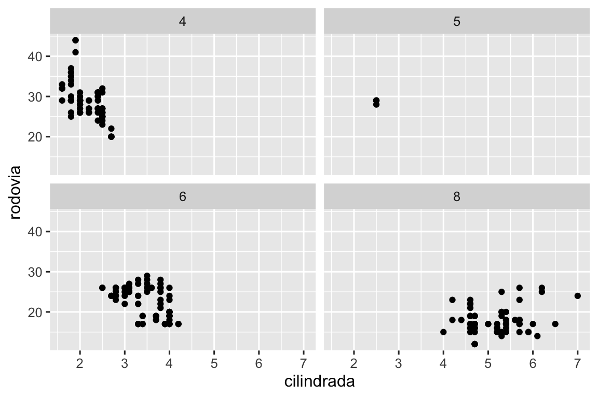
Para que as facetas do seu gráfico sejam criadas com base em duas variáveis, troque a função facet_wrap() pela função facet_grid(). O primeiro argumento de facet_grid() também é uma fórmula, mas agora é uma fórmula com o seguinte formato: linhas ~ colunas.
ggplot(milhas, aes(x = cilindrada, y = rodovia)) +
geom_point() +
facet_grid(tracao ~ cilindros)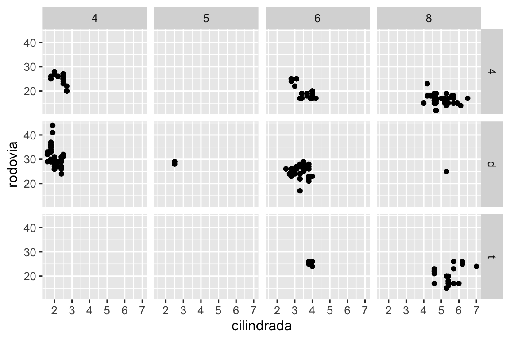
Por padrão, cada uma dessas facetas compartilha a mesma escala e intervalo para os eixos x e y. Isso é útil quando você quer comparar os dados de facetas diferentes, mas pode ser limitante quando você quer visualizar melhor a relação entre as variáveis dentro de cada faceta. Definir, em uma função que cria facetas, o argumento scales como "free" permitirá escalas de diferentes nos eixos tanto das linhas quanto das colunas. Já "free_x" permitirá escalas diferentes apenas nas linhas e "free_y" permitirá escalas diferentes apenas nas colunas.
ggplot(milhas, aes(x = cilindrada, y = rodovia)) +
geom_point() +
facet_grid(tracao ~ cilindros, scales = "free_y")![Gráfico de dispersão da eficiência de combustível na rovodia versus o tamanho do motor dos carros, com facetas definidas pela quantidade de cilindros, nas linhas, e pelo tipo de tração, nas colunas. Isso resulta em 12 facetas que se organizam em uma grade 4x3. Algumas dessas facetas não têm observações: 5 cilíndros e tração nas 4 rodas, 4 ou 5 cilíndros e tração dianteira. As facetas de uma mesma linha compartilham a mesma escala no eixo y e as facetas em uma mesma coluna compartilham a mesma escala no eixo x.](layers_files/figure-html/unnamed-chunk-22-1.png)
9.4.1 Exercícios
O que acontece se você criar facetas com uma variável contínua?
-
O que significam essas células vazias no gráfico acima com
facet_grid(tracao ~ cilindros)? Execute o código a seguir. Como elas se relacionam com o gráfico que resulta desse código?ggplot(milhas) + geom_point(aes(x = tracao, y = cilindros)) -
Quais gráficos o código a seguir cria? O que o
.faz?ggplot(milhas) + geom_point(aes(x = cilindrada, y = rodovia)) + facet_grid(tracao ~ .) ggplot(milhas) + geom_point(aes(x = cilindrada, y = rodovia)) + facet_grid(. ~ cilindros) -
Observe o primeiro gráfico criado por faceta abaixo:
ggplot(milhas) + geom_point(aes(x = cilindrada, y = rodovia)) + facet_wrap(~ classe, nrow = 2)Quais são as vantagens de usar facetas ao invés do atributo estético
color? Quais são as desvantagens? Como essas vantagens e desvantagens mudariam se você tivesse uma base de dados maior? Leia
?facet_wrap. O que o argumentonrowfaz? O que o argumentoncolfaz? Quais outras opções controlam o layout dos paineis individuais? Por que a funçãofacet_grid()não tem os argumentosnrowencol?-
Qual dos gráficos abaixo facilita a comparação do tamanho do motor (
cilindrada) entre carros com diferentes tipos de tração? O que isso diz sobre quando colocar uma variável para criar facetas nas linhas ou colunas?ggplot(milhas, aes(x = cilindrada)) + geom_histogram() + facet_grid(tracao ~ .) ggplot(milhas, aes(x = cilindrada)) + geom_histogram() + facet_grid(. ~ tracao) -
Recrie o gráfico abaixo usando
facet_wrap()ao invés defacet_grid(). Como as posições dos rótulos das facetas mudam?ggplot(milhas) + geom_point(aes(x = cilindrada, y = rodovia)) + facet_grid(tracao ~ .)
9.5 Transformações estatísticas
Considere um gráfico de barras simples, construído com geom_bar() ou geom_col(). O gráfico abaixo mostra a quantidade total de diamantes na base de dados diamante, agrupados por corte. A base de dados diamante, do pacote dados, contém informações de ~54.000 diamantes, incluindo preco, quilate, cor, transparencia e corte de cada diamante. O gráfico mostra que há mais diamantes disponíveis com cortes de alta qualidade do que com cortes de baixa qualidade.
No eixo x, o gráfico mostra a variável corte, uma variável da base de dados diamante. No eixo y, ele mostra a contagem (em inglês, count), mas contagem não é uma variável contida em diamante! De onde vem essa contagem? Muitos gráficos, como os gráficos de dispersão, representam os valores brutos da sua base de dados. Outros gráficos, como os gráficos de barras, calculam novos valores para serem representados no gráfico:
Gráficos de barras, histogramas e polígonos de frequência agrupam seus dados em intervalos e então representam no gráfico a contagem do intervalo, ou seja, a quantidade de observações contida em cada intervalo.
Smoothers (suavizadores) ajustam um modelo aos seus dados e, em seguida, representam as predições deste modelo.
Gráficos boxplot calculam cinco medidas resumo da distribuição e então mostram esses valores como uma caixa com um formato específico.
O algoritmo usado para calcular novos valores para um gráfico recebe o nome de stat, uma abreviação para o termo em inglês statistical transformation (ou seja, transformação estatística). Figura 9.2 mostra como esse processo funciona com o geom_bar().

Você pode descobrir qual stat uma geometria usa ao inspecionar o valor padrão do argumento stat. Por exemplo, ?geom_bar() mostra que o valor padrão para stat é “count” (contagem), o que significa que geom_bar() usa stat_count(). stat_count() está documentada na mesma página que geom_bar(). Se você rolar a página, a seção chamada “Computed variables” (Variáveis calculadas) explica que ela calcula duas novas variáveis: count e prop.
Toda geometria tem uma stat padrão; e toda stat tem uma geometria padrão. Isso significa que você, em geral, pode usar geometrias sem se preocupar com a transformação estatística subjacente. No entanto, há três razões pelas quais você pode precisar usar uma stat explicitamente:
-
Você pode querer substituir a stat padrão. No código abaixo, nós mudamos a stat da
geom_bar()de “count” (o padrão) para “identity”. Isso nos deixa mapear a altura das barras para os valores brutos de uma variável y. -
Você pode querer substituir o mapeamento padrão de variáveis transformadas para o atributo estético. Por exemplo, você pode querer mostrar um gráfico de barras com proporções, ao invés de contagens:
ggplot(diamante, aes(x = corte, y = after_stat(prop), group = 1)) + geom_bar()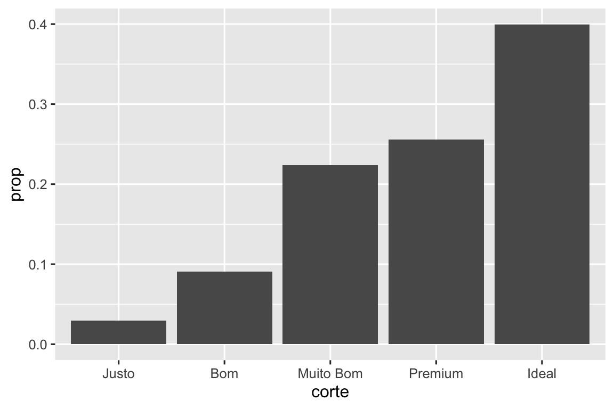
Para descobrir quais variáveis podem ser calculadas por stat, procure pela seção “computed variables” (“variáveis calculadas”) na ajuda do
geom_bar(). -
Você pode querer chamar atenção, no seu código, para a transformação estatística utilizada. Por exemplo, você pode usar
stat_summary(), que cria uma medida resumo dos valores de y para cada valor único de x, para destacar a medida resumo que você está calculando:ggplot(diamante) + stat_summary( aes(x = corte, y = profundidade), fun.min = min, fun.max = max, fun = median )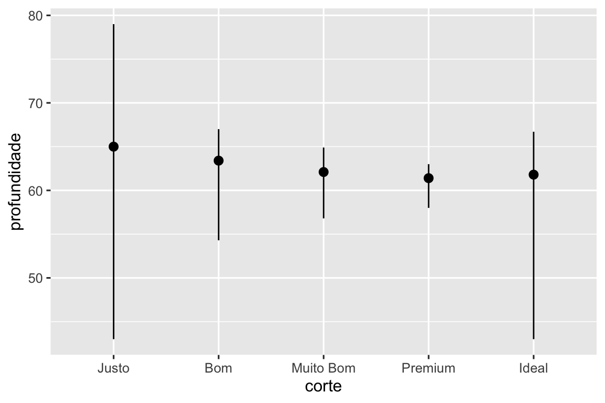
O ggplot2 oferece mais de 20 stats para você utilizar. Cada stat é uma função, então você pode obter ajuda da maneira usual, por exemplo, ?stat_bin.
9.5.1 Exercícios
Qual é a geometria associada ao
stat_summary()por padrão? Como você poderia reescrever o código para gerar o gráfico anterior usando uma funçãogeomao invés da funçãostat?O que a função
geom_col()faz? No que ela difere da funçãogeom_bar()?A maioria dos geoms e stats vêm em pares que quase sempre são usados em conjunto. Faça uma lista de todos os pares. O que eles têm em comum? (Dica: Leia a documentação.)
Quais variáveis o
stat_smooth()calcula? Quais argumentos controlam o comportamento dessa função?-
No nosso gráfico de barras de proporção, precisamos definir
group = 1. Por que? Em outras palavras, qual é o problema com esses dois gráficos?ggplot(diamante, aes(x = corte, y = after_stat(prop))) + geom_bar() ggplot(diamante, aes(x = corte, fill = cor, y = after_stat(prop))) + geom_bar()
9.6 Ajustes de posição
Há mais um elemento mágico associado aos gráficos de barras. Você pode colorir um gráfico de barras usando o atributo estético color ou, de maneira mais útil, o atributo estético fill:
# Esquerda
ggplot(milhas, aes(x = tracao, color = tracao)) +
geom_bar()
# Direita
ggplot(milhas, aes(x = tracao, fill = tracao)) +
geom_bar()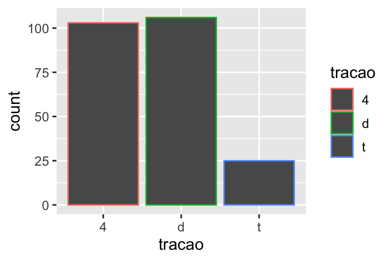
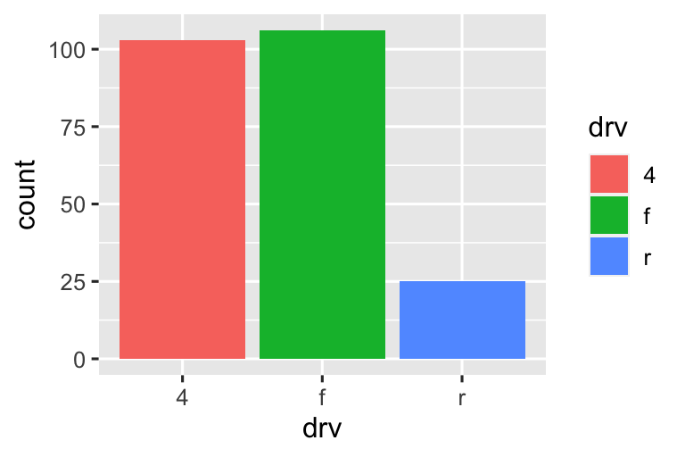
Observe o que acontece se você mapear o atributo estético de preenchimento (fill) para outra variável, como classe: as barras são empilhadas automaticamente. Cada retângulo colorido representa uma combinação de tracao e classe.
O empilhamento é realizado automaticamente usando o ajuste de posição especificado pelo argumento position. Se você não quer um gráfico de barras empilhadas, você pode usar uma das outras três opções: "identity", "dodge" ou "fill".
-
position = "identity"irá colocar cada objeto exatamente onde ele se encontra no contexto do gráfico. Essa opção não é muito útil para barras, porque elas se sobrepõem. Para visualizar essa sobreposição, precisamos tornar as barras ligeiramente transparentes, definindoalphaigual a um valor pequeno, ou completamente transparentes, definindofill = NA.# Esquerda ggplot(milhas, aes(x = tracao, fill = classe)) + geom_bar(alpha = 1/5, position = "identity") # Direita ggplot(milhas, aes(x = tracao, color = classe)) + geom_bar(fill = NA, position = "identity")![Gráfico de barras divididas pelo tipo de tração dos carros, onde cada barra é preenchida com cores diferentes para cada classe de carros. As alturas das barras correspondem à quantidade de carros em cada categoria de tração, e as alturas dos segmentos coloridos são proporcionais à quantidade de carros de uma determinada categoria de classe dentro de uma determinada categoria de tipo de tração. No entanto, os segmentos se sobrepõem. No primeiro gráfico, as barras são preenchidas com cores transparentes e no segundo gráfico, elas são apenas contornadas com cor.](layers_files/figure-html/unnamed-chunk-36-1.png)
![Gráfico de barras divididas pelo tipo de tração dos carros, onde cada barra é preenchida com cores diferentes para cada classe de carros. As alturas das barras correspondem à quantidade de carros em cada categoria de tração, e as alturas dos segmentos coloridos são proporcionais à quantidade de carros de uma determinada categoria de classe dentro de uma determinada categoria de tipo de tração. No entanto, os segmentos se sobrepõem. No primeiro gráfico, as barras são preenchidas com cores transparentes e no segundo gráfico, elas são apenas contornadas com cor.](layers_files/figure-html/unnamed-chunk-36-2.png)
O ajuste de posição “identity” é mais útil para geoms 2D, como pontos (
geom_point()), na qual esse ajuste é o padrão. position = "fill"funciona comoposition = "stacked", mas faz com que cada conjunto de barras empilhadas tenha a mesma altura. Isso facilita a comparação de proporções entre grupos.-
position = "dodge"coloca objetos sobrepostos diretamente ao lado um do outro. Isso facilita a comparação de valores individuais.# Esquerda ggplot(milhas, aes(x = tracao, fill = classe)) + geom_bar(position = "fill") # Direita ggplot(milhas, aes(x = tracao, fill = classe)) + geom_bar(position = "dodge")![Na esquerda, gráfico de barras divididas pelo tipo de tração dos carros, onde cada barra é preenchida com cores diferentes para cada classe de carros. Todas as barras apresentam uma altura igual a 1 e as alturas dos segmentos coloridos correspondem à proporção de carros de uma determinada categoria de classe dentro de uma determinada categoria de tipo de tração. Na direita, gráfico de barras agrupadas para os tipos de tração de carros. As barras são agrupadas por categoria de tipo de tração. Dentro de cada grupo, as barras representam cada categoria de classe. Algumas classes são representadas em alguns tipos de tração e não são representadas em outros, resultando em um número desigual de barras dentro de cada grupo. As alturas dessas barras representam a quantidade de carros com um determinado tipo de tração e classe.](layers_files/figure-html/unnamed-chunk-37-1.png)
![Na esquerda, gráfico de barras divididas pelo tipo de tração dos carros, onde cada barra é preenchida com cores diferentes para cada classe de carros. Todas as barras apresentam uma altura igual a 1 e as alturas dos segmentos coloridos correspondem à proporção de carros de uma determinada categoria de classe dentro de uma determinada categoria de tipo de tração. Na direita, gráfico de barras agrupadas para os tipos de tração de carros. As barras são agrupadas por categoria de tipo de tração. Dentro de cada grupo, as barras representam cada categoria de classe. Algumas classes são representadas em alguns tipos de tração e não são representadas em outros, resultando em um número desigual de barras dentro de cada grupo. As alturas dessas barras representam a quantidade de carros com um determinado tipo de tração e classe.](layers_files/figure-html/unnamed-chunk-37-2.png)
Há um outro tipo de ajuste que não é útil para gráficos de barras, mas pode ser muito útil para gráficos de dispersão. Lembre-se do nosso primeiro gráfico de dispersão. Você notou que o gráfico mostra apenas 126 pontos, mesmo que haja 234 observações no conjunto de dados?

Os valores de rodovia e cilindrada são arredondados, então os pontos aparecem em uma grade e muitos pontos se sobrepõem. Esse problema é conhecido como sobreposição excessiva (em inglês, overplotting). Essa disposição dos pontos torna difícil visualizar a distribuição dos dados. Os pontos estão distribuídos de forma similiar ao longo do gráfico, ou há uma combinação especial de rodovia e cilindrada que contém 109 valores?
Você pode evitar essa sobreposição configurando o ajuste de posição para “jitter”. position = "jitter" adiciona uma pequena quantidade de ruído aleatório a cada ponto. Isso espalha os pontos porque é improvável que dois pontos recebam a mesma quantidade de ruído aleatório.
ggplot(milhas, aes(x = cilindrada, y = rodovia)) +
geom_point(position = "jitter")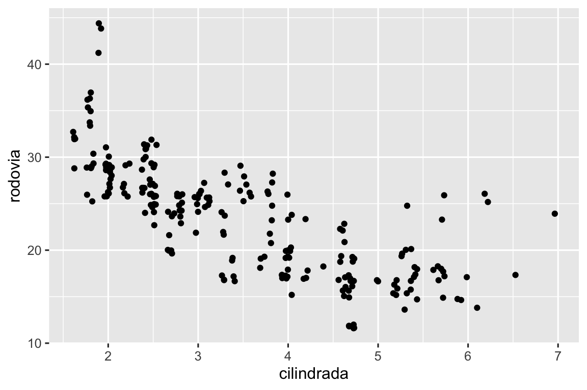
Adicionar aleatoriedade pode parecer uma maneira estranha de melhorar seu gráfico, mas ainda que isso torne o gráfico menos preciso em escalas pequenas, o torna mais revelador em grandes escalas. Já que essa é uma operação tão útil, o ggplot2 possui uma forma simplificada para geom_point(position = "jitter"): geom_jitter().
Para aprender mais sobre ajustes de posição, veja a página de ajuda referente a cada tipo de ajuste: ?position_dodge, ?position_fill, ?position_identity, ?position_jitter e ?position_stack.
9.6.1 Exercícios
-
Qual o problema com o gráfico abaixo? Como você poderia melhorá-lo?
ggplot(milhas, aes(x = cidade, y = rodovia)) + geom_point() -
Qual, caso exista, é a diferença entre os dois gráficos abaixo? Por que?
ggplot(milhas, aes(x = cilindrada, y = rodovia)) + geom_point() ggplot(milhas, aes(x = cilindrada, y = rodovia)) + geom_point(position = "identity") Quais parâmetros do
geom_jitter()controlam a quantidade de “jittering” (ruído aleatório adicionado a cada ponto)?Compare e aponte as diferenças entre
geom_jitter()egeom_count().Qual é o ajuste de posição padrão para o
geom_boxplot()? Crie uma visualização com a base de dadosmilhasque demonstre isso.
9.7 Sistema de coordenadas
Os sistemas de coordenadas são, provavelmente, a parte mais complicada do ggplot2. O sistema de coordenadas padrão é o sistema cartesiano, no qual as posições x e y atuam de forma independente para determinar a localização de cada ponto. Há outros dois sistemas de coordenadas que, ocasionalmente, são úteis.
-
coord_quickmap()ajusta corretamente a proporção entre os eixos para mapas geográficos. Isso é muito importante se você estiver plotando dados espaciais com o ggplot2. Não temos espaço para discutir mapas neste livro, mas você pode aprender mais no capítulo de Mapas do livro ggplot2: Elegant graphics for data analysis.nz <- map_data("nz") ggplot(nz, aes(x = long, y = lat, group = group)) + geom_polygon(fill = "white", color = "black") ggplot(nz, aes(x = long, y = lat, group = group)) + geom_polygon(fill = "white", color = "black") + coord_quickmap()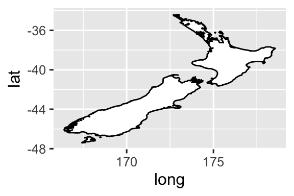
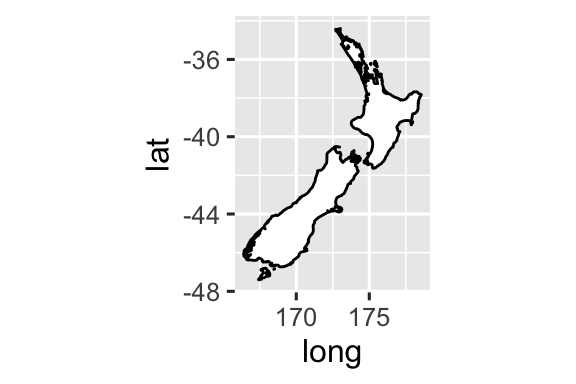
-
coord_polar()usa coordenadas polares. As coordenadas polares revelam uma conexão interessante entre um gráfico de barras e um gráfico de rosa-dos-ventos (em inglês, Coxcomb).bar <- ggplot(data = diamante) + geom_bar( mapping = aes(x = transparencia, fill = transparencia), show.legend = FALSE, width = 1 ) + theme(aspect.ratio = 1) bar + coord_flip() bar + coord_polar()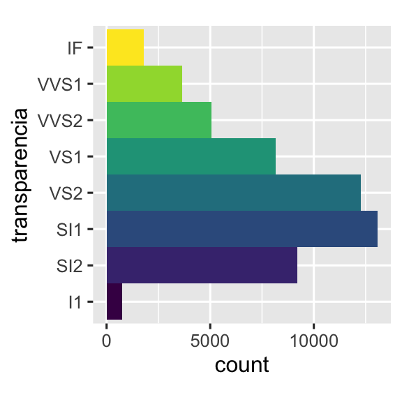
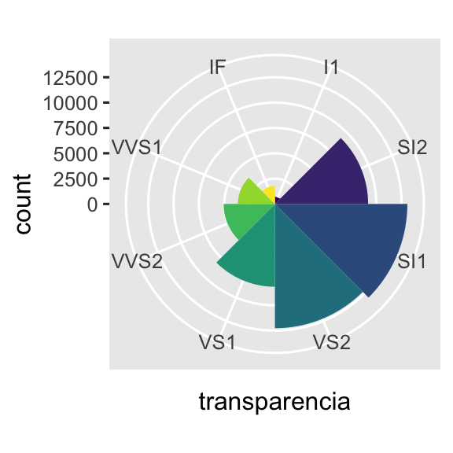
9.7.1 Exercícios
Transforme um gráfico de barras empilhadas em um gráfico de pizza usando
coord_polar().Qual a diferença entre
coord_quickmap()ecoord_map()?-
O que o gráfico abaixo te diz sobre a relação entre as variáveis cidade e rodovia? Por que
coord_fixed()é importante? O que ogeom_abline()faz?ggplot(data = milhas, mapping = aes(x = cidade, y = rodovia)) + geom_point() + geom_abline() + coord_fixed()
9.8 A gramática dos gráficos baseada em camadas
Nós podemos expandir o template para criação de um gráfico, que você aprendeu em Seção 1.3, ao adicionar ajustes de posição, transformações estatísticas, sistemas de coordenadas e facetas:
ggplot(data = <DADOS>) +
<GEOM_FUNCTION>(
mapping = aes(<MAPPINGS>),
stat = <STAT>,
position = <POSITION>
) +
<COORDINATE_FUNCTION> +
<FACET_FUNCTION>Nosso novo template recebe sete parâmetros, as palavras entre < > que aparecerem no template. Na prática, raramente será necessário fornecer esses sete parâmetros para construir um gráfico, porque o ggplot2 fornecerá valores padrão úteis para todos esses parâmetros, exceto os dados, o mapeamento estético e a função geom.
Os sete parâmetros do template compõem a gramática dos gráficos, um sistema formal para construir gráficos. A gramática dos gráficos é baseada na ideia de que é possível descrever, de forma única, qualquer gráfico como uma combinação de: um conjunto de dados, uma geometria, um mapeamento estético, uma transformação estatística, um ajuste de posição, um sistema de coordenadas, um esquema de facetas e um tema.
Para entender como isso funciona, considere como você poderia construir um gráfico básico do zero: você poderia começar com um conjunto de dados e, em seguida, transformá-lo nas informações que deseja mostrar (com uma transformação estatística). Em seguida, você poderia escolher uma geometria para representar cada observação dos dados transformados. Você poderia então usar os atributos estéticos das geometrias para representar variáveis presentes nesses dados. Você mapearia os valores de cada variável para cada mapeamento estético. Essas etapas estão ilustradas em Figura 9.3. Em seguida, você selecionaria um sistema de coordenadas para posicionar as geometrias, usando a localização dos objetos (que é em si um atributo estético) para exibir os valores das variáveis x e y.

A essa altura, você teria um gráfico completo, mas poderia ir além e ajustar as posições das geoms no sistema de coordenadas (com ajustes de posição) ou dividir o gráfico em subgráficos (criando facetas). Você também poderia adicionar informações ao gráfico ao adicionar uma ou mais camadas. Cada camada adicional usará uma base de dados, uma geometria, um conjunto de mapeamentos estéticos, uma transformação estatística e um ajuste de posição.
Você pode usar esse método para construir qualquer gráfico que imaginar. Em outras palavras, você pode usar o template de código que aprendeu neste capítulo para construir centenas de milhares de gráficos distintos.
Caso queira aprender mais sobre os fundamentos teóricos do ggplot2, você pode ler “The Layered Grammar of Graphics”, o artigo científico que descreve detalhadamente a teoria do ggplot2.
9.9 Resumo
Neste capítulo você aprendeu sobre a gramática dos gráficos baseada em camadas, começando com atributos estéticos e geometrias para construir um gráfico simples, facetas para dividir o gráfico em subgráficos, transformações estatísticas para entender como as geometrias são calculadas, ajustes de posição para controlar de forma precisa essas posições quando as geometrias se sobrepõem e sistemas de coordenadas que permitem modificar o que x e y significam. Uma camada que ainda não abordamos é o tema (theme), que será introduzida em Seção 11.5.
Dois recursos muito úteis para ter uma visão geral do funcionamento completo do ggplot2 são: a cheatsheet do ggplot2 (que você encontra, em inglês, em https://posit.co/resources/cheatsheets) e o site do pacote ggplot2, também em inglês (https://ggplot2.tidyverse.org).
Uma lição importante que você deve tirar deste capítulo é que, quando sentir a necessidade de uma geometria que não é fornecida pelo ggplot2, é sempre uma boa ideia verificar se alguém já resolveu seu problema criando um pacote de extensão do ggplot2 que ofereça essa geometria.